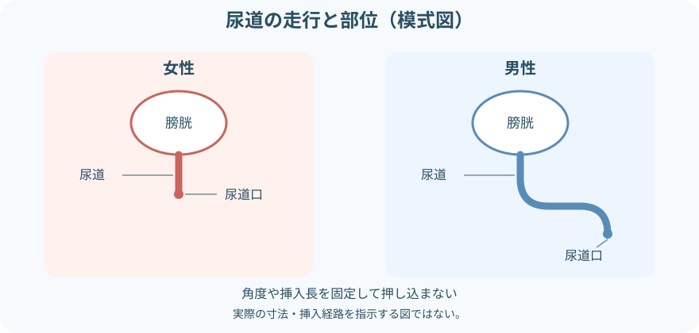

注意事項
盲目的に挿入しない
- 骨盤外傷、尿道損傷の疑い、尿道出血、最近の尿道・前立腺手術
- 既知の尿道狭窄、偽尿道、挿入困難歴
- 強い抵抗、激しい痛み、出血が出現した
- 急性尿閉に加えて発熱、側腹部痛、血尿、全身状態悪化がある
残尿量だけで判断しない
- 排尿から測定までの時間と排尿量
- 尿意、下腹部膨満・疼痛、排尿困難、尿勢低下
- 水分摂取、輸液、薬剤、麻酔・手術、神経疾患
- 腎機能、尿路感染、前回値と経時変化
膀胱スキャンと導尿を使い分ける

- 膀胱スキャン：非侵襲的に膀胱内尿量を推定する。残尿測定では排尿後に行う
- 一時的導尿：カテーテルを一時挿入し、尿を排出・測定・採取して抜去する
- 留置カテーテル：継続排尿が必要な別の管理。必要性を毎日見直す
超音波による測定値は推定値。腹水、妊娠、骨盤内腫瘤、肥満、手術後の解剖変化、創・ドレッシングなどで精度が変わることがある。
残尿測定の考え方

- 排尿後残尿量（PVR）は、排尿後に膀胱内へ残った尿量
- できるだけ排尿後すみやかに測定し、遅れた場合は時刻を記録する
- 一回の値には測定誤差と日内変動がある。症状や目的に応じて再測定する
- 治療判断に使える普遍的な単一カットオフ値はない
- 院内プロトコルの値を使う場合も、症状、排尿量、前回値、患者背景を合わせる
膀胱スキャンの手順
- 目的と測定条件を確認する
残尿測定か膀胱容量確認かを分け、最終排尿時刻と排尿量、症状を確認する。
- 機器と患者情報を確認する
機種、プローブ、バッテリー、モード、患者区分を説明書どおり設定する。性別選択がない機種もある。
- 仰臥位を基本に下腹部を露出する
プライバシーを守り、恥骨上部の創、ドレッシング、膨満、圧痛を確認する。
- 超音波用ゲルを塗布する
機種が指定する位置へ十分なゲルを置き、プローブを下腹部正中から膀胱へ向ける。
- 照準を合わせて測定する
画面の膀胱位置・方向表示を確認し、必要に応じて角度を調整して再測定する。
- 値の妥当性を確かめる
症状や触診所見と合わない、連続値が大きく違う、照準が不十分なら再測定し、必要時は別方法で確認する。
- 清拭・消毒して記録する
患者のゲルを拭き、プローブを製品・施設手順で清掃消毒する。測定時刻、排尿量、PVR、体位、機種、症状を残す。
一時的導尿の必要物品

- 指示された種類・長さ・最小限の適切な径の単回使用カテーテル
- 滅菌手袋、滅菌ドレープ、清拭用綿球・ガーゼと鑷子
- 施設で承認された尿道周囲清拭用の滅菌液または消毒薬
- 単回使用の滅菌潤滑剤。必要時は指示された局所麻酔薬
- 尿受け・計量容器、検体容器、処置シーツ、廃棄容器
- 照明、追加手袋、清拭用品、患者を覆う物品
尿道周囲に用いる液を一律に決めない。粘膜への使用可否、アレルギー、採用製品と院内手順を確認する。
一時的導尿の手順
- 適応・既往・指示を確認する
目的、尿道損傷リスク、手術歴、狭窄・挿入困難歴、アレルギー、検体採取の有無を確認する。
- 説明し、体位と環境を整える
羞恥心と疼痛へ配慮し、必要な介助者と照明を確保する。無理な開脚や肢位を避ける。
- 手指衛生後、無菌野を準備する
物品を使用順に置き、尿受けと廃棄物の位置を先に決める。カテーテル先端へ触れない。
- 尿道口を確認して清拭する
周囲組織を分けた手は不潔側として固定し、決められた方向・回数で清拭する。
- 十分に潤滑し、優しく挿入する
患者へ呼吸を促し、尿の流出を確認するまでゆっくり進める。必要な挿入長と陰茎の保持は患者・製品・手順に従う。
- 尿を排出・測定・採取する
カテーテルを安定させ、容器へ自然排出する。量、色、混濁、血液、沈渣、においを観察する。
- 流出停止を確認して抜去する
無理な膀胱圧迫はせず、指示どおり排出後にゆっくり抜く。包皮を翻転した場合は必ず元へ戻す。
- 患者を整え、再評価・記録する
疼痛、出血、腹部膨満、尿意、排尿状態、バイタルを確認し、物品を廃棄する。
挿入を止めるサイン
- 強い抵抗があり、体位や緊張を整えても進まない
- 強い痛み、尿道出血、新しい血尿がある
- カテーテルが折れる・たわむ、誤った位置へ入った可能性がある
- 尿が出ないまま十分に進み、位置を確認できない
性別・解剖で変わる点

- 女性：尿道口を視認して挿入する。腟へ入った場合は抜いたカテーテルを再使用せず、新しい物品でやり直す
- 男性：尿道の走行を整えるよう陰茎を保持する。抵抗部を力で越えない
- 包皮：処置後に必ず元の位置へ戻し、嵌頓包茎を防ぐ
- 共通：尿の流出で膀胱内への到達を確認し、必要以上に挿入・操作しない
実施後の観察

排出量だけで終わらない
- 導尿量と、直前の排尿量・膀胱スキャン値との差
- 色、混濁、血液、沈渣、におい
- 尿道痛、下腹部痛、出血、発熱、悪寒
- 下腹部膨満・尿意の改善、血圧・気分不良
- 次回排尿時刻、排尿量、再度の残尿、再尿閉
測定値・排尿の異常時
- スキャン値と症状が合わない：体位、照準、モード、ゲルを確認して再測定。腹水や骨盤内病変なども考える
- 導尿しても尿が出ない：位置、屈曲、閉塞を確認し、無理な再挿入を繰り返さず報告する
- 多量の尿が排出された：循環変化、血尿、尿量の推移を観察し、指示どおり報告する
- 強い痛み・出血：直ちに中止し、尿道損傷や偽尿道を疑って評価を依頼する
- 繰り返す残尿・尿閉：単回値ではなく、排尿日誌、薬剤、便秘、神経・泌尿器疾患を含めて共有する
報告・記録
- 適応、最終排尿時刻、排尿量、症状、下腹部所見
- 膀胱スキャンの時刻、体位、機種・モード、測定値、再測定値
- 導尿の時刻、カテーテル種類・径、挿入の難易度、尿流出までの状況
- 導尿量、尿性状、検体採取、実施前後の疼痛・出血・全身状態
- 異常、報告先、対応、再評価、次回の排尿・測定計画
出典
- CDC「Guideline for Prevention of Catheter-Associated Urinary Tract Infections：Summary of Recommendations」
- European Association of Urology Nurses「Urethral intermittent catheterisation in adults（2024）」
- NICE「Urinary incontinence and pelvic organ prolapse in women：Assessing residual urine」
- European Association of Urology「Management of Non-neurogenic Male LUTS：Post-void residual urine」
- AHRQ「Sample Bladder Scan Policy」